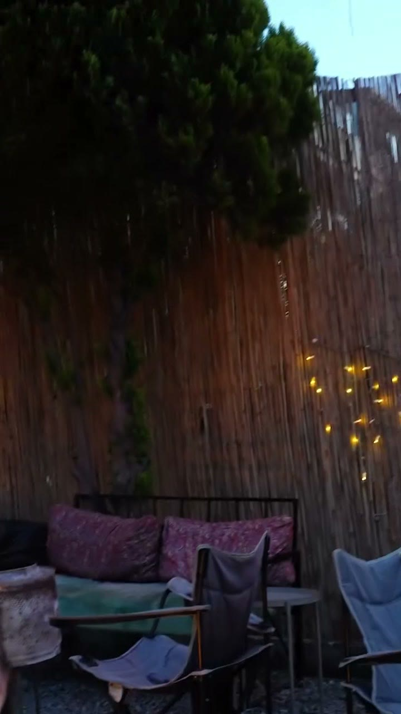
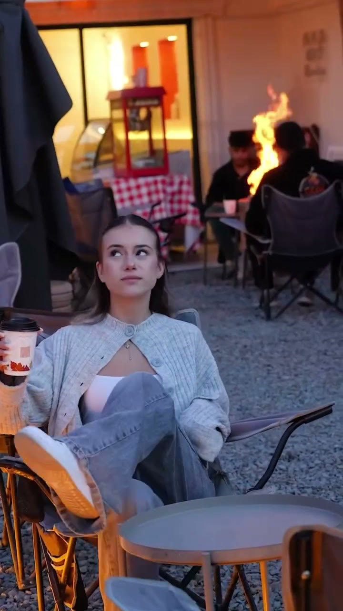
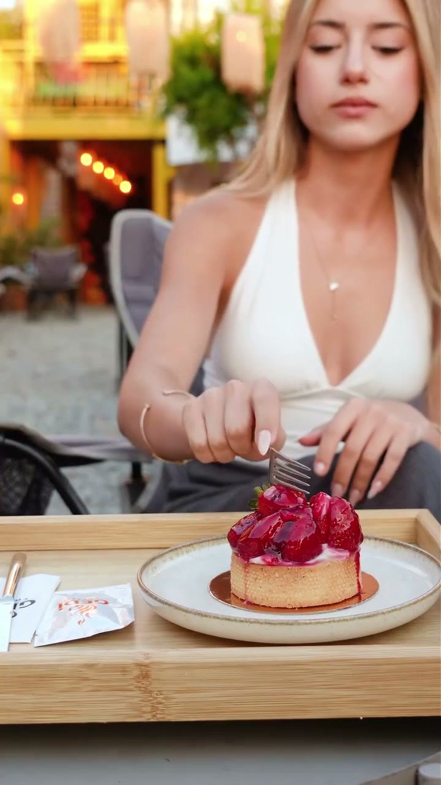
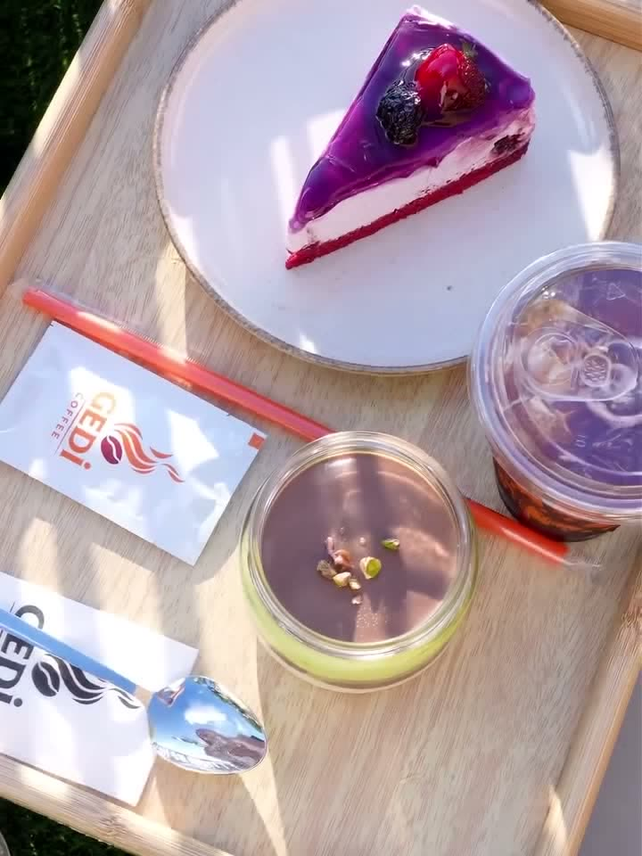
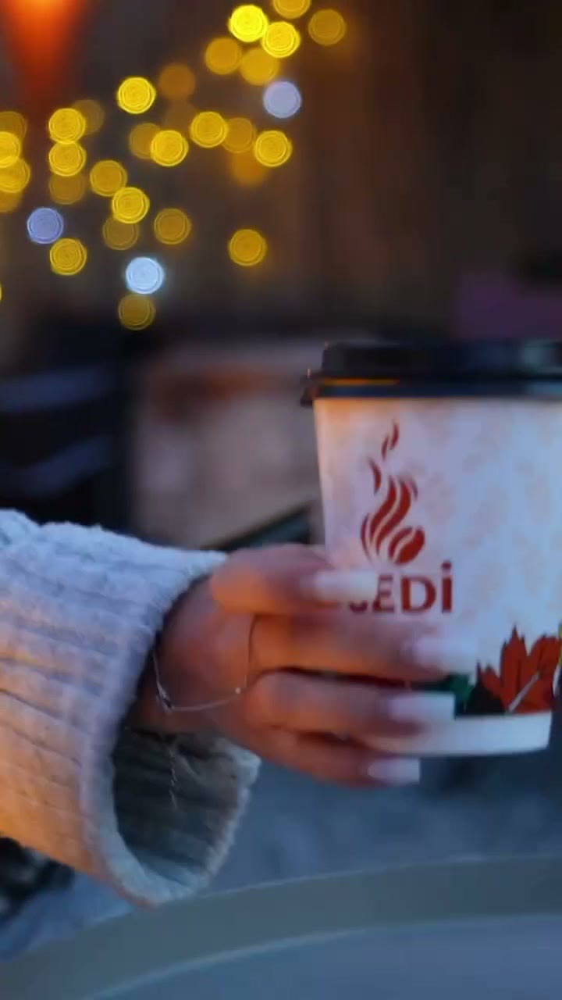

Kapılar açılır, terasa çık
Seyir terasından gün batımını izle. Kahveni kasadan al, manzaraya karşı istediğin köşeye otur.

Beykent’in tepesinde manzara, ateş başı ve film geceleri.
Her gün 17.00’den 02.00’ye kadar açık
Seyir terası, ateş başında sohbet ve açık havada film geceleri. Kahven elinde, Beykent ayaklarının altında.
Seyir terasından gün batımını izle. Kahveni kasadan al, manzaraya karşı istediğin köşeye otur.

Hava serinleyince ateş başı sezonu açılır. Ateşte marshmallow, yanında kestane ve sıcak çikolata.

Açık hava sinemasında yıldızların altında film. Patlamış mısırını al, yerini seç. Film gecelerini Instagram’dan duyuruyoruz.
Fenerler gece ikiye kadar yanar. Yarın akşam yine buradayız.
Menü mevsime göre değişir. Güncel tatlıları Instagram’da paylaşıyoruz.



4,8Google’da 705 yorum
Devamlı olarak geldiğim bir mekân. Atmosferi o kadar güzel ki, özellikle sinema günleri çok daha keyifli oluyor. Çalışanların güler yüzlü olması da ayrı güzel.
Manzarası ve gün batımı tek kelimeyle harika. Kamp sandalyeleriyle çok samimi, rahat ve açık bir havası var. Kahveleri çok başarılı, özellikle magnolyası kesinlikle denenmeli.
Çok huzurlu ve keyifli bir ortamı var, kahve fiyatları gayet makul. Akşamları ateş başında kahve keyfi yapmak gibi bir ihtiyacım olduğunu burayı keşfedene kadar bilmiyordum.
Beykent, Beylikdüzü. Google’da 4,8 puan.